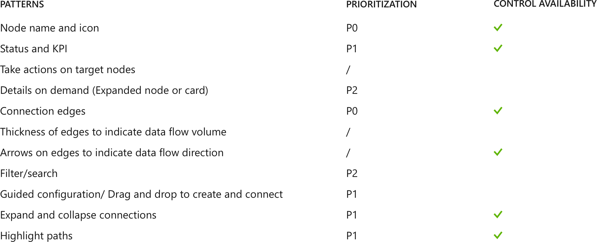
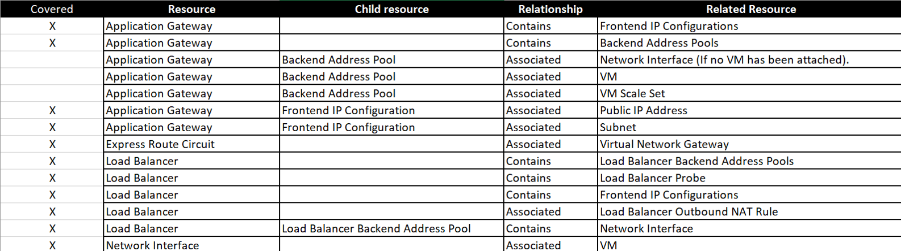

AZURE NETWORK WATCHER
Network performance monitoring and diagnostics service for Azure.
Requirements and challenges
Azure network users have expressed needs to monitor and diagnose network health conditions at a scenario level. We want to provide a network diagnostic and visualization tool to help users understand, diagnose, and gain insights to their Azure network.
User task break-down and prioritization:
- Enable Network Watcher for all or selected subscriptions. (P0)
- Use 3 diagnostic tools (IP flow verify, Packet capture and Security group view) to gain insights into their network performance and health. (P0)
- View integrated activity logs related to their networks. (P0)
- Visualize the network topology of selected application. (P1)
As we have limited time and visualization is the most challenging part for both design and engineering, we decided to adopt the "MVP" process to work on P0 features in the first phase.
Phase 1: P0 MVP design
The design pattern I leveraged in the first draft is from a similar feature and was liked by LT because it's colorful and visually appealing. Below are the mockups we used for user study (topology is only a placeholder):
Feedbacks and problems
Our user researcher showed the design to 3 external users and 2 internal users. The features are all well accepted, yet some design problems were brought up:
- Users don't know what to expect in the tab "Net Diagnose".
- "Enable all" is the only CTA. Users were't able to find the hidden action in the contextual menu to enable selected subscription.
- "It makes makes select different targets for different tools" - they wanted to select a target once and act upon it.
- Topology will be the delighter that can "wow" users and is needed by most users. Current topology is not showing enough information. Need to move topology design to P0.
Design iteration
Based on the feedback, I made some iteration on the design:
Phase 2: Topology design
By interviewing users, we found that they want 2 types of network diagram:
- A diagram that shows network traffic flow.
- A topology of network resource virtual connection.
PM indicated that the traffic flow diagram is hard to achieve technically and we decided to focus on connection topology for now. (We later integrated this user need into a new feature in network watcher - Connectivity check.) To reduce engineering time, we reached out to teams that worked on diagram controls before, unfortunately their scenario is quite different and the code is hard to reuse. Together with developers, we researched some diagram control libaries to see how they can fit into our scenario and prioritized our design goals based on user needs and control availability.
Diagram moodboard
I created a design moodboard to learn about how diagrams and topologies are visually designed in similar products.

Visual translation
As our diagram is mainly showing connections and relationships between resources, the node of the diagram can be as simple as icon-label pair. The harder part is to translate the relationships of resources from a spreadsheet to the layout of nodes and edges in a visual grid system. Below is a sample of information I got from pm.
In my sketches, I tried different edge styles including straight, curved and elbow. Elbow line is the most neat one. Moving from paper to high fidelity, I first defined the grid system - each node occupies a box and the edges always starts from the center of box edge.

Topology final design
Final design was designed for a complicated scenario, which can cover 90% of users' use cases. The design includes node name and status, hover to highlight related resources and right click to show contextual actions.
Business impact: 33k usage per week
This feature has been demoed at Microsoft Ignite conference and gained great popularity. The network watcher blade is opened 33k times per week, and topology is the most used feature - 14k per week. View blog posts and comments.
Internally, this has been successfully demoed to Satya and Bill Gates.